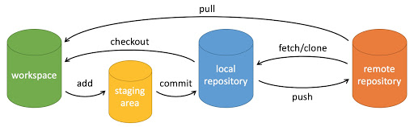
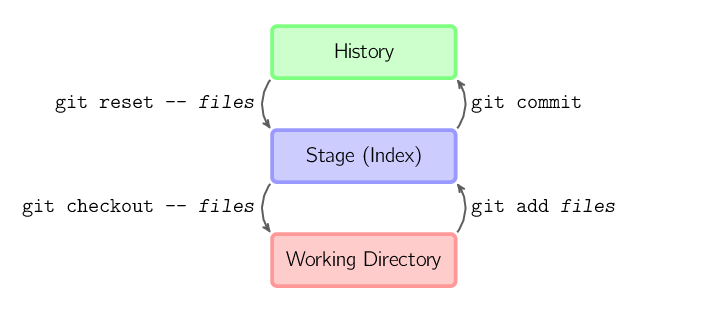

Git 基本操作
Git 的工作就是创建和保存你项目的快照及与之后的快照进行对比。
本章将对有关创建与提交你的项目快照的命令作介绍。
Git 常用的是以下 6 个命令：git clone、git push、git add 、git commit、git checkout、git pull，后面我们会详细介绍。

说明：
- workspace：工作区
- staging area：暂存区/缓存区
- local repository：版本库或本地仓库
- remote repository：远程仓库
一个简单的操作步骤：
$ git init $ git add . $ git commit
- git init - 初始化仓库。
- git add . - 添加文件到暂存区。
- git commit - 将暂存区内容添加到仓库中。
创建仓库命令
下表列出了 git 创建仓库的命令：
| 命令 | 说明 |
|---|---|
git init |
初始化仓库 |
git clone |
拷贝一份远程仓库，也就是下载一个项目。 |
提交与修改
Git 的工作就是创建和保存你的项目的快照及与之后的快照进行对比。
下表列出了有关创建与提交你的项目的快照的命令：
| 命令 | 说明 |
|---|---|
git add |
添加文件到暂存区 |
git status |
查看仓库当前的状态，显示有变更的文件。 |
git diff |
比较文件的不同，即暂存区和工作区的差异。 |
git difftool |
使用外部差异工具查看和比较文件的更改。 |
git range-diff |
比较两个提交范围之间的差异。 |
git commit |
提交暂存区到本地仓库。 |
git reset |
回退版本。 |
git rm |
将文件从暂存区和工作区中删除。 |
git mv |
移动或重命名工作区文件。 |
git notes |
添加注释。 |
git checkout |
分支切换。 |
git switch （Git 2.23 版本引入） |
更清晰地切换分支。 |
git restore （Git 2.23 版本引入） |
恢复或撤销文件的更改。 |
git show |
显示 Git 对象的详细信息。 |
提交日志
| 命令 | 说明 |
|---|---|
git log |
查看历史提交记录 |
git blame <file>
|
以列表形式查看指定文件的历史修改记录 |
git shortlog |
生成简洁的提交日志摘要 |
git describe |
生成一个可读的字符串，该字符串基于 Git 的标签系统来描述当前的提交 |
远程操作
| 命令 | 说明 |
|---|---|
git remote |
远程仓库操作 |
git fetch
|
从远程获取代码库 |
git pull
|
下载远程代码并合并 |
git push
|
上传远程代码并合并 |
git submodule
|
管理包含其他 Git 仓库的项目 |
Git 文件状态
Git 的文件状态分为三种：工作目录（Working Directory）、暂存区（Staging Area）、本地仓库（Local Repository）。了解这些概念及其交互方式是掌握 Git 的关键。
工作目录（Working Directory）
工作目录是你在本地计算机上看到的项目文件。它是你实际操作文件的地方，包括查看、编辑、删除和创建文件。所有对文件的更改首先发生在工作目录中。
在工作目录中的文件可能有以下几种状态：
- 未跟踪（Untracked）：新创建的文件，未被 Git 记录。
- 已修改（Modified）：已被 Git 跟踪的文件发生了更改，但这些更改还没有被提交到 Git 记录中。
暂存区（Staging Area）
暂存区，也称为索引（Index），是一个临时存储区域，用于保存即将提交到本地仓库的更改。你可以选择性地将工作目录中的更改添加到暂存区中，这样你可以一次提交多个文件的更改，而不必提交所有文件的更改。
- 使用
git add <filename>命令将文件从工作目录添加到暂存区。 - 使用
git add .命令将当前目录下的所有更改添加到暂存区。
git add <filename> # 添加指定文件到暂存区 git add . # 添加所有更改到暂存区
本地仓库（Local Repository）
本地仓库是一个隐藏在 .git 目录中的数据库，用于存储项目的所有提交历史记录。每次你提交更改时，Git 会将暂存区中的内容保存到本地仓库中。
使用 git commit -m "commit message" 命令将暂存区中的更改提交到本地仓库。
git commit -m "commit message" # 提交暂存区的更改到本地仓库
文件状态的转换流程
未跟踪（Untracked）： 新创建的文件最初是未跟踪的。它们存在于工作目录中，但没有被 Git 跟踪。
touch newfile.txt # 创建一个新文件 git status # 查看状态，显示 newfile.txt 未跟踪
已跟踪（Tracked）：
通过 git add 命令将未跟踪的文件添加到暂存区后，文件变为已跟踪状态。
git add newfile.txt # 添加文件到暂存区 git status # 查看状态，显示 newfile.txt 在暂存区
已修改（Modified）： 对已跟踪的文件进行更改后，这些更改会显示为已修改状态，但这些更改还未添加到暂存区。
echo "Hello, World!" > newfile.txt # 修改文件 git status # 查看状态，显示 newfile.txt 已修改
已暂存（Staged）：
使用 git add 命令将修改过的文件添加到暂存区后，文件进入已暂存状态，等待提交。
git add newfile.txt # 添加文件到暂存区 git status # 查看状态，显示 newfile.txt 已暂存
已提交（Committed）：
使用 git commit 命令将暂存区的更改提交到本地仓库后，这些更改被记录下来，文件状态返回为已跟踪状态。
git commit -m "Added newfile.txt" # 提交更改 git status # 查看状态，工作目录干净

hepburn
158***9602@qq.com
git commit、git push、git pull、 git fetch、git merge 的含义与区别
git pull 相当于 git fetch + git merge。
hepburn
158***9602@qq.com
tuntuntunwu
wxq***567567@126.com
git 基本操作注意点总结:
复制本地仓库的命令方式。
<source repository>：想克隆的本地仓库路径
<destination repository>：想克隆去另一个地方的路径。例如 git clone d:/git e:/git11 是将 d:/git 的仓库（即包含隐藏文件 .git 的目录）克隆到 e:/git11 目录下。
注意：
1、<destination repository> 目录必须没有在文件系统上创建，或创建了但里面为空，不然会克隆不成功。
2、与从远程拉取仓库不同，路径的最后不用写 .git 来表明这是一个仓库。
获得简短的状态输出。
直接提交全部修改，相当于 add 和 commit 一起执行了。
注意：全部文件为 tracked 才行，你新建了文件为 untracked 时，该命令不会执行。
与 git reset 不同，reset 是替换整个目录树，多余的文件将被删除。而 checkout 只是替换指定的文件，对多余的文件保留不做任何处理。
把文件从工作区和暂存区中删除。使用 —cached 只从暂存区中删除。使用 –rf <directory> 可删除指定目录下的所有文件和子目录。
在工作区和暂存区中进行移动或重命名。若 <destination> 不为一个目录名，则执行重命名。如果为一个目录名，则执行移动。
tuntuntunwu
wxq***567567@126.com
汪洋
768***667@qq.com
图解 Git

上面的四条命令在工作目录、暂存目录(也叫做索引)和仓库之间复制文件。
git add files把当前文件放入暂存区域。git commit给暂存区域生成快照并提交。git reset -- files用来撤销最后一次git add files，你也可以用git reset撤销所有暂存区域文件。git checkout -- files把文件从暂存区域复制到工作目录，用来丢弃本地修改。汪洋
768***667@qq.com
DGd
345***34@qq.com
参考地址
Git 常用命令大全
git 常用命令(点击图片查看大图)：
git init # 初始化本地git仓库（创建新仓库） git config --global user.name "xxx" # 配置用户名 git config --global user.email "xxx@xxx.com" # 配置邮件 git config --global color.ui true # git status等命令自动着色 git config --global color.status auto git config --global color.diff auto git config --global color.branch auto git config --global color.interactive auto git config --global --unset http.proxy # remove proxy configuration on git git clone git+ssh://git@192.168.53.168/VT.git # clone远程仓库 git status # 查看当前版本状态（是否修改） git add xyz # 添加xyz文件至index git add . # 增加当前子目录下所有更改过的文件至index git commit -m 'xxx' # 提交 git commit --amend -m 'xxx' # 合并上一次提交（用于反复修改） git commit -am 'xxx' # 将add和commit合为一步 git rm xxx # 删除index中的文件 git rm -r * # 递归删除 git log # 显示提交日志 git log -1 # 显示1行日志 -n为n行 git log -5 git log --stat # 显示提交日志及相关变动文件 git log -p -m git show dfb02e6e4f2f7b573337763e5c0013802e392818 # 显示某个提交的详细内容 git show dfb02 # 可只用commitid的前几位 git show HEAD # 显示HEAD提交日志 git show HEAD^ # 显示HEAD的父（上一个版本）的提交日志 ^^为上两个版本 ^5为上5个版本 git tag # 显示已存在的tag git tag -a v2.0 -m 'xxx' # 增加v2.0的tag git show v2.0 # 显示v2.0的日志及详细内容 git log v2.0 # 显示v2.0的日志 git diff # 显示所有未添加至index的变更 git diff --cached # 显示所有已添加index但还未commit的变更 git diff HEAD^ # 比较与上一个版本的差异 git diff HEAD -- ./lib # 比较与HEAD版本lib目录的差异 git diff origin/master..master # 比较远程分支master上有本地分支master上没有的 git diff origin/master..master --stat # 只显示差异的文件，不显示具体内容 git remote add origin git+ssh://git@192.168.53.168/VT.git # 增加远程定义（用于push/pull/fetch） git branch # 显示本地分支 git branch --contains 50089 # 显示包含提交50089的分支 git branch -a # 显示所有分支 git branch -r # 显示所有原创分支 git branch --merged # 显示所有已合并到当前分支的分支 git branch --no-merged # 显示所有未合并到当前分支的分支 git branch -m master master_copy # 本地分支改名 git checkout -b master_copy # 从当前分支创建新分支master_copy并检出 git checkout -b master master_copy # 上面的完整版 git checkout features/performance # 检出已存在的features/performance分支 git checkout --track hotfixes/BJVEP933 # 检出远程分支hotfixes/BJVEP933并创建本地跟踪分支 git checkout v2.0 # 检出版本v2.0 git checkout -b devel origin/develop # 从远程分支develop创建新本地分支devel并检出 git checkout -- README # 检出head版本的README文件（可用于修改错误回退） git merge origin/master # 合并远程master分支至当前分支 git cherry-pick ff44785404a8e # 合并提交ff44785404a8e的修改 git push origin master # 将当前分支push到远程master分支 git push origin :hotfixes/BJVEP933 # 删除远程仓库的hotfixes/BJVEP933分支 git push --tags # 把所有tag推送到远程仓库 git fetch # 获取所有远程分支（不更新本地分支，另需merge） git fetch --prune # 获取所有原创分支并清除服务器上已删掉的分支 git pull origin master # 获取远程分支master并merge到当前分支 git mv README README2 # 重命名文件README为README2 git reset --hard HEAD # 将当前版本重置为HEAD（通常用于merge失败回退） git rebase git branch -d hotfixes/BJVEP933 # 删除分支hotfixes/BJVEP933（本分支修改已合并到其他分支） git branch -D hotfixes/BJVEP933 # 强制删除分支hotfixes/BJVEP933 git ls-files # 列出git index包含的文件 git show-branch # 图示当前分支历史 git show-branch --all # 图示所有分支历史 git whatchanged # 显示提交历史对应的文件修改 git revert dfb02e6e4f2f7b573337763e5c0013802e392818 # 撤销提交dfb02e6e4f2f7b573337763e5c0013802e392818 git ls-tree HEAD # 内部命令：显示某个git对象 git rev-parse v2.0 # 内部命令：显示某个ref对于的SHA1 HASH git reflog # 显示所有提交，包括孤立节点 git show HEAD@{5} git show master@{yesterday} # 显示master分支昨天的状态 git log --pretty=format:'%h %s' --graph # 图示提交日志 git show HEAD~3 git show -s --pretty=raw 2be7fcb476 git stash # 暂存当前修改，将所有至为HEAD状态 git stash list # 查看所有暂存 git stash show -p stash@{0} # 参考第一次暂存 git stash apply stash@{0} # 应用第一次暂存 git grep "delete from" # 文件中搜索文本“delete from” git grep -e '#define' --and -e SORT_DIRENT git gc git fsckDGd
345***34@qq.com
参考地址